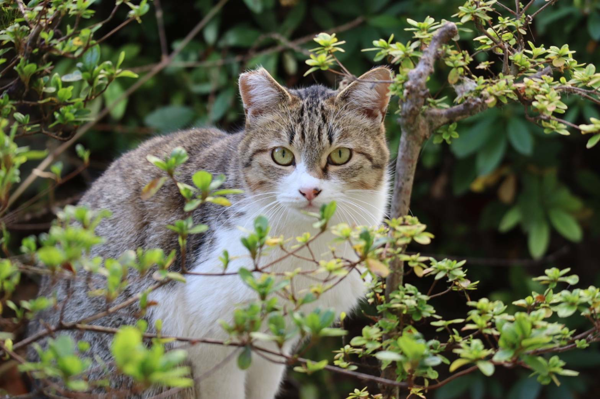

活動概要

サークルについて
本プログラミングサークルは、2021年春に設立された歴史の新しいサークルです。
現在は週に１度の勉強会で技術を教えあったり、チーム開発でWEBアプリケーションを作ったりして活動しています。
チーム開発では、作りたいアプリケーションを決めて、設計・開発・運用まですべて自分たちで行います。目に見える成果物が残せるだけでなく、チームで活動する上で必要な技術も学ぶことが出来る場を目指しています。
プログラミングに興味がある方、仲間と協力してものづくりをしてみたい方、「大学生活でこれを頑張った！」という成果物を作りたい方、私たちと一緒に活動してみませんか？活動に必要なものは勉強意欲とPCです。
現在はWEBアプリ開発を主な活動内容としていますが、今後希望者がいれば競技プログラミングやハッカソンの参加等の活動も検討します。
現在は週に１度の勉強会で技術を教えあったり、チーム開発でWEBアプリケーションを作ったりして活動しています。
チーム開発では、作りたいアプリケーションを決めて、設計・開発・運用まですべて自分たちで行います。目に見える成果物が残せるだけでなく、チームで活動する上で必要な技術も学ぶことが出来る場を目指しています。
プログラミングに興味がある方、仲間と協力してものづくりをしてみたい方、「大学生活でこれを頑張った！」という成果物を作りたい方、私たちと一緒に活動してみませんか？活動に必要なものは勉強意欲とPCです。
現在はWEBアプリ開発を主な活動内容としていますが、今後希望者がいれば競技プログラミングやハッカソンの参加等の活動も検討します。
活動日
毎週水曜13~16時
入部希望者へ
こちら（fukushimaprog@gmail.com）へ、もしくはtwitterのDMでご連絡ください。
※アプリ開発にあたり部内チーム分けを行っていることもあるので、時期によっては入部受理に時間がかかる場合があります。ご了承下さい。
※アプリ開発にあたり部内チーム分けを行っていることもあるので、時期によっては入部受理に時間がかかる場合があります。ご了承下さい。